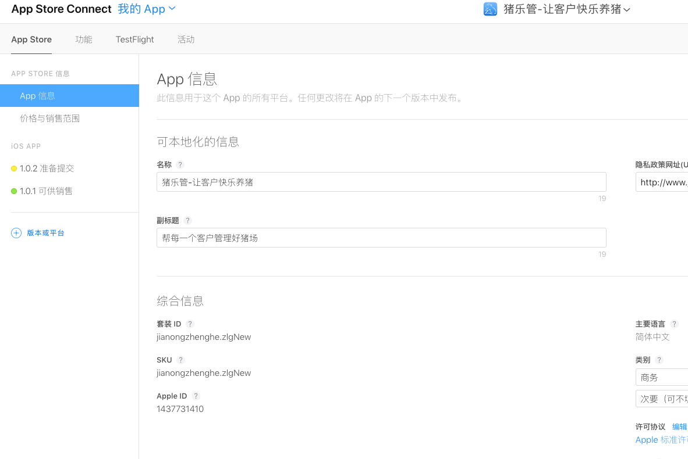
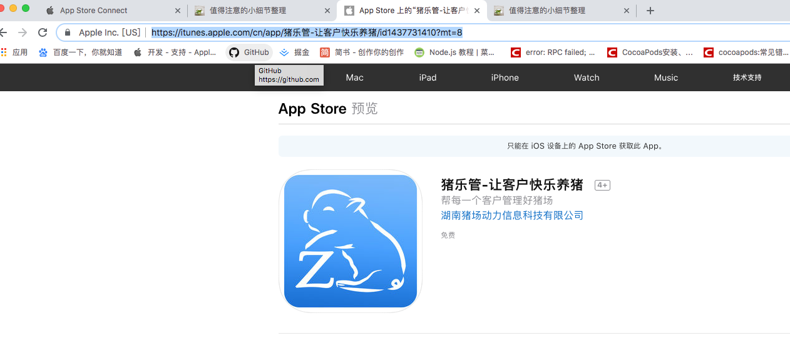

值得注意的小细节整理
- 一、如何输出超链接的各个组成部分
- 二、CAShapeLayer的strokeStart和strokeEnd属性
- 三、errors：The operation couldn’t be completed. Unable to log in with account 'myappleid'. An unexpected failure occurred while logging in (Underlying error code 1100)
- 四、label 文字实现竖直排布、
- 五、Archive的时候，选择了发布的Provisioning Profile，但是在选择Code Signing Identify时，没有唯一对应的。
- 六、如何知道tableview已经加载完成
- 七、运行程序出现file too small (length=0)错误解决办法
- 八、上架错误提示
- 九、统计项目中代码数量
- 十、获取电脑ip
- 十一、没有导入libz库
- 十二、The file “Info.plist” couldn’t be opened because there is no such file.
- 十三、 The file “CCYYXmpp” couldn’t be opened because you don’t have permission to view it.
- 十四、iOS 跳转到设置界面
- 十五、获取AppStore应用版本号
- 十六、app导包检验错误 如图：
- 十七、Undefined symbols for architecture x86_64:
- 十八、 [#pragma clang diagnostic ignored 用法 更多看这]
- 十九、宏与函数的区别(特有意思 举个例子)
- 二十、 Xcode实现顶部自定义注释
- 二十一、 如图
- 二十二、4. Missing required icon file. The bundle does not contain an app icon for iPad of exactly '152x152' pixels, in .png format for iOS versions >= 10.0."
- 二十三、"Invalid Bundle. Your app supports Multitasking on iPad, so you must include the UILaunchStoryboardName key in your bundle, 'jianongzhenghe.zlgNew’.
- 二十四、 The file couldn’t be opened because you don’t have permission to view it.
一、如何输出超链接的各个组成部分
NSURL *url = [NSURL URLWithString:@"http://www.baidu.com/search?id=1"];
NSLog(@"scheme:%@", [url scheme]); //协议 http
NSLog(@"host:%@", [url host]); //域名 www.baidu.com
NSLog(@"absoluteString:%@", [url absoluteString]); //完整的url字符串 http://www.baidu.com:8080/search?id=1
(刚才在真机上跑了一下，并没有打印出来端口 8080 啊)
NSLog(@"relativePath: %@", [url relativePath]); //相对路径 search
NSLog(@"port :%@", [url port]); // 端口 8080
NSLog(@"path: %@", [url path]); // 路径 search
NSLog(@"pathComponents:%@", [url pathComponents]); // search
NSLog(@"Query:%@", [url query]); //参数 id=1
二、CAShapeLayer的strokeStart和strokeEnd属性
1 keyPath = strokeStart 动画的fromValue = 0，toValue = 1
表示从路径的0位置画到1 怎么画是按照清除开始的位置也就是清除0 一直清除到1 效果就是一条路径慢慢的消失
2 keyPath = strokeStart 动画的fromValue = 1，toValue = 0
表示从路径的1位置画到0 怎么画是按照清除开始的位置也就是1 这样开始的路径是空的（即都被清除掉了）一直清除到0 效果就是一条路径被反方向画出来
3 keyPath = strokeEnd 动画的fromValue = 0，toValue = 1
表示 这里我们分3个点说明动画的顺序 strokeEnd从结尾开始清除 首先整条路径先清除后2/3，接着清除1/3 效果就是正方向画出路径
4 keyPath = strokeEnd 动画的fromValue = 1，toValue = 0
效果就是反方向路径慢慢消失
注释： 动画的0-1（fromValue = 0，toValue = 1） 或1-0 （fromValue = 1，toValue = 0） 表示执行的方向 和路径的范围。
CABasicAnimation *pathAnimation = [CABasicAnimation animationWithKeyPath:@"strokeEnd"];
pathAnimation.duration = 1.5;
pathAnimation.timingFunction = [CAMediaTimingFunction functionWithName:kCAMediaTimingFunctionEaseInEaseOut];
pathAnimation.fromValue = [NSNumber numberWithFloat:0.0f];
pathAnimation.toValue = [NSNumber numberWithFloat:1.0f];
pathAnimation.autoreverses = NO;
[_chartLine addAnimation:pathAnimation forKey:@"strokeEndAnimation"];
_chartLine.strokeEnd = 2.0;
三、errors：The operation couldn’t be completed. Unable to log in with account 'myappleid'. An unexpected failure occurred while logging in (Underlying error code 1100).
解决方法： 原因是Apple ID 过时了，点击"Preferences" -> "Accounts", 重新登录；然后退出Xcode，重进，编译，就会自动修复repairing...
四、label 文字实现竖直排布、
只需要设置 numberOfLines = 0 然后再调用sizeToFit
五、Archive的时候，选择了发布的Provisioning Profile，但是在选择Code Signing Identify时，没有唯一对应的。

此时即使你知道当前Provisioning Profile对应的是哪个Code Signing Identify，并选择它，开始Archive时，也会提示以下的错误：

解决方案：
1.打开终端，输入：
cd Library/MobileDevice/Provisioning\ Profiles
2.在Xcode，Provisioning Profile中选择other，得到当前证书的UUID

3.然后在终端中执行
rm -rf 8ed7a446-9fd9-461e-9965-f85a75c78258.mobileprovision（此处替换成你的provision）
4.从developer.apple.com重新下载证书，添加到Xcode。
说明：有可能再次添加Provisioning Profile还会出现上面没有唯一Identify对应的情况，可以多试几次。
六、如何知道tableview已经加载完成
-(void)tableView:(UITableView*)tableViewwillDisplayCell:(UITableViewCell*)cellforRowAtIndexPath:(NSIndexPath*)indexPath
{
if([indexPath row] == ((NSIndexPath*)[[tableView indexPathsForVisibleRows] lastObject]).row){
//TODO:end refresh
}
}
由于willDisplayCell是异步调用的，所以在上面的block里面不能即时更新UI，最好使用GCD通过主线程加上你的代码：
{
if([indexPath row] == ((NSIndexPath*)[[tableView indexPathsForVisibleRows] lastObject]).row){
dispatch_async(dispatch_get_main_queue,^{
//for example [activityIndicator stopAnimating];
});
}
}
七、运行程序出现file too small (length=0)错误解决办法
ld: file too small (length=0) file '/Users/Allister/Library/Developer/Xcode/DerivedData/Haze_Meter-dkjjcmjehyitmcbhkcbujnsrhwpu/Build/Intermediates/Haze Meter.build/Debug-iphonesimulator/Haze Meter.build/Objects-normal/x86_64/ViewController.o' for architecture x86_64 clang: error: linker command failed with exit code 1 (use -v to see invocation)
1.选择xcode菜单的Product下的Clean,或者组合键是Cmd+Shift+K,清除一遍 2.重新编译
八、上架错误提示

原因：没有对应buddle id的应用， 先去itunes里新建一个对应buddle id的app， 然后再打包
九、统计项目中代码数量
cd到项目根目录
find . "(" -name "*.m" -or -name "*.mm" -or -name "*.cpp" -or -name "*.h" -or -name "*.rss" ")" -print |
xargs wc -l
十、获取电脑ip
ifconfig en0
十一、没有导入libz库


十二、The file “Info.plist” couldn’t be opened because there is no such file.

十三、 The file “CCYYXmpp” couldn’t be opened because you don’t have permission to view it.
解决办法：切换一下project和targerts 化成真机

十四、iOS 跳转到设置界面
[[UIApplication sharedApplication] openURL:[NSURL URLWithString:UIApplicationOpenSettingsURLString]];
设置其他界面
在 URL Types 添加 一个叫 prefs 的 URL Schemes
[[UIApplication sharedApplication] openURL:[NSURL URLWithString:@"跳转不同界面对应的URLString"]]
蜂窝网络：App-Prefs:root=MOBILE_DATA_SETTINGS_ID
VPN — App-Prefs:root=General&path=Network/VPN
Wi-Fi：App-Prefs:root=WIFI
定位服务：App-Prefs:root=LOCATION_SERVICES
个人热点：App-Prefs:root=INTERNET_TETHERING
关于本机：App-Prefs:root=General&path=About
辅助功能：App-Prefs:root=General&path=ACCESSIBILITY
飞行模式：App-Prefs:root=AIRPLANE_MODE
锁定：App-Prefs:root=General&path=AUTOLOCK
亮度：App-Prefs:root=Brightness
蓝牙：App-Prefs:root=General&path=Bluetooth
时间设置：App-Prefs:root=General&path=DATE_AND_TIME
FaceTime：App-Prefs:root=FACETIME
设置：App-Prefs:root=General
键盘设置：App-Prefs:root=General&path=Keyboard
iCloud：App-Prefs:root=CASTLE
iCloud备份：App-Prefs:root=CASTLE&path=STORAGE_AND_BACKUP
语言：App-Prefs:root=General&path=INTERNATIONAL
定位：App-Prefs:root=LOCATION_SERVICES
音乐：App-Prefs:root=MUSIC
Music Equalizer — App-Prefs:root=MUSIC&path=EQ
Music Volume Limit — App-Prefs:root=MUSIC&path=VolumeLimit
Network — App-Prefs:root=General&path=Network
Nike + iPod — App-Prefs:root=NIKE_PLUS_IPOD
Notes — App-Prefs:root=NOTES
Notification — App-Prefs:root=NOTIFICATIONS_ID
Phone — App-Prefs:root=Phone
Photos — App-Prefs:root=Photos
Profile — App-Prefs:root=General&path=ManagedConfigurationList
Reset — App-Prefs:root=General&path=Reset
Safari — App-Prefs:root=Safari
Siri — App-Prefs:root=General&path=Assistant
Sounds — App-Prefs:root=Sounds
Software Update — App-Prefs:root=General&path=SOFTWARE_UPDATE_LINK
Store — App-Prefs:root=STORE
Twitter — App-Prefs:root=TWITTER
Usage — App-Prefs:root=General&path=USAGE
Wallpaper — App-Prefs:root=Wallpaper
十五、获取AppStore应用版本号
想不通过自己服务器后台，而是直接比较本地和appStore版本大小做版本更新，但是用http://itunes.apple.com/lookup?id=%@（这里写appid，通过在itunes connect
App信息里面获取）获取不到版本号？
这个时候应该怎么办： 加上*/cn*(当然这只是针对只在中国玩玩的APP) https也可以
下载链接格式：http://itunes.apple.com/cn/lookup?id=%@ (apple id可以在App Store Connect的app信息找到)

跳转链接格式：https://itunes.apple.com/cn/app/这里是app名称/id后面这里接app的apple id(apple id可以在App Store Connect的app信息
中找到)?mt=8
这里有一个深坑，注意在微信里面扫描跳转的链接， 用芝麻二维码生成器生成， 其他的很多二维码生成跳转之后， 会提示app不支持中国地区等等很奇葩的东西
附上代码：
func applicationDidBecomeActive(_ application: UIApplication) {
checkUpdateVersion()
}
func checkUpdateVersion() -> Void {
let urlString:String = String(format: "https://itunes.apple.com/cn/lookup?id=%@", "1437731410")
let url:URL = URL(string: urlString)!
Alamofire.request(url, method: .post).responseJSON { (data) in
if let JSON:[String:Any] = data.result.value as? [String:Any]{
guard (JSON["resultCount"] as! Int) > 0 else {return}
let arr1:[[String:Any]] = JSON["results"] as! [[String:Any]]
guard arr1.count > 0 else {return}
let dic1:[String:Any] = arr1.first as! [String:Any]
let appStoreVersion:String = dic1["version"] as! String
self.compareVersion(appstoreVersion: appStoreVersion)
}
}
}
func compareVersion(appstoreVersion:String) -> Void {
let localVersion:String = Bundle.main.infoDictionary!["CFBundleShortVersionString"] as! String
if localVersion < appstoreVersion {
self.updateVersion()
}
}
func updateVersion() -> Void {
ZLGAlertManager.manager.alert(title: "", message: "有新版本,请前往升级", sureTitle: "确定") { (action) -> (Void) in
let url:URL = URL(string: "https://itunes.apple.com/cn/app/%E7%8C%AA%E4%B9%90%E7%AE%A1-%E8%AE%A9%E5%AE%A2%E6%88%B7%E5%BF%AB%E4%B9%90%E5%85%BB%E7%8C%AA/id1437731410?mt=8")!
UIApplication.shared.open(url, options:[:], completionHandler: { (result) in
})
}
}
十六、app导包检验错误 如图：

解决方式：检查生产证书是否正确， 重新打开以下p12，更改bunddle id，然后再改回去，重新导出
十七、Undefined symbols for architecture x86_64:
"_main", referenced from:
implicit entry/start for main executable
ld: symbol(s) not found for architecture x86_64

原因：工程里的main被删除了，重新添加一个main.m； 如果没有删除，则是因为main.m没有加入编译，解决办法：target -> build parse ->compile source 添加main.m。
十八、 [#pragma clang diagnostic ignored 用法 更多看这]
// 例子 没有使用的变量
#pragma clang diagnostic push
#pragma clang diagnostic ignored "-Unused-variable"
int a;
#pragma clang diagnostic pop
十九、宏与函数的区别(特有意思 举个例子)
宏：
#define czyMax(a,b) ((a)>(b)?(a):(b))
函数:
- (NSInteger)compare:(NSInteger)a andB:(NSInteger)b
{
if (a++>b) {
return a;
}
return b;
}
比较部分：
NSInteger a = 1;
NSInteger b = 0;
[self compare:a andB:b];
NSLog(@"a = %ld, b = %ld", a, b);
czyMax(a++, b);
NSLog(@"a = %ld, b = %ld", a, b);
NSInteger c = 1;
NSInteger d = 0;
czyMax(c++, d+10);
NSLog(@"c = %ld, d = %ld", c, d);
输出结果：
2017-09-01 11:37:24.835 czytext[14333:851733] a = 1, b = 0
2017-09-01 11:37:24.835 czytext[14333:851733] a = 3, b = 0
2017-09-01 11:37:24.835 czytext[14333:851733] c = 2, d = 0
充分说明了两者的变量作用域的区别 同时应该注意用宏比较a++之后a的值变化；
即MAX(a++,b)；与MAX(a++,b+10)；运行两者后a的值是多少
还有一个问题，如果我要是用上面的宏求a++(a=1), b=0的最大值,
那么我得到的值是3，此时宏也不实用了，怎么办呢？
求最大值的宏正确书写姿势：
//##合并
#define CZY_JOGIN(A,B) A##B
//COUNTER是一个预定义的宏，这个值在编译过程中将从0开始计数，每次被调用时加1。
//为变量名a和b添加了一个计数后缀，这样大大避免了变量名相同而导致问题的可能性
#define CZY_MAX(A,B) CZY_GET_MAX(A,B,COUNTER)
//求最大值 宏中用反斜杠换行\
#define CZY_GET_MAX(A,B,L) ({ \
typeof(A) CZY_JOGIN(__a,L) = (A);\
typeof(B) CZY_JOGIN(__b,L) = (B);\
(CZY_JOGIN(__a,L) > CZY_JOGIN(__b,L)) ? CZY_JOGIN(__a,L) : CZY_JOGIN(__b,L); \
})
//补充弱强类型的宏 也用的很多
#define weak(obj) __weak typeof(obj) weak##obj = obj;
#define strong(obj) __strong typeof(obj) strong##obj = obj;
//类似的求三者最大值的宏
//三者求最大值
#define CZY_THREE_JOIN(A,B) A##B
#define CZY_THREE_MAX(A,B,C) CZY_THREE_COMPARE(A,B,C,COUNTER)
#define CZY_THREE_COMPARE(A,B,C,COUNTER) ({\
typeof(A) CZY_THREE_JOIN(__a, COUNTER) = (A);\
typeof(B) CZY_THREE_JOIN(__b, COUNTER) = (B);\
typeof(C) CZY_THREE_JOIN(__c, COUNTER) = (C);\
(CZY_THREE_JOIN(__a, COUNTER)>CZY_THREE_JOIN(__b, COUNTER))?\
((CZY_THREE_JOIN(__a, COUNTER)>CZY_THREE_JOIN(__c, COUNTER))?CZY_THREE_JOIN(__a,
COUNTER):CZY_THREE_JOIN(__c, COUNTER)):\
((CZY_THREE_JOIN(__b, COUNTER)>CZY_THREE_JOIN(__c, COUNTER))?CZY_THREE_JOIN(__b,
COUNTER):CZY_THREE_JOIN(__c, COUNTER));\
})
二十、 Xcode实现顶部自定义注释
Xcode 显示包内容 :Contents -> Developer -> Platforms -> iPhoneOS.platform -> Developer -> Library -> Xcode -> Templates -> File Templates 修改Source文件夹下面的Cocoa Touch Class.xctemplate对应的所有文件的.h和.m，如果只修改一个，那么新建文件的时候，必须继承这个类才会看到自定义的文件注释。
二十一、 如图

示意图
解决：用文本编辑器打开Launch.storyboard 和Main.storyboard 文件删掉：
capability name="documents saved in the Xcode 8 format" minToolsVersion="8.0"
二十二、4. Missing required icon file. The bundle does not contain an app icon for iPad of exactly '152x152' pixels, in .png format for iOS versions >= 10.0."
ERROR ITMS-90023: "Missing required icon file. The bundle does not contain an app icon for iPad of exactly '152x152' pixels, in .png format for iOS versions >= 10.0.":
原因：app支持ipad但是缺少了152*152的appIcon
详细尺寸请看这里
二十三、"Invalid Bundle. Your app supports Multitasking on iPad, so you must include the UILaunchStoryboardName key in your bundle, 'jianongzhenghe.zlgNew’.
ERROR ITMS-90475: "Invalid Bundle. Your app supports Multitasking on iPad, so you must include the UILaunchStoryboardName key in your bundle, 'jianongzhenghe.zlgNew’. Learn more (https://developer.apple.com/library/content/documentation/General/Reference/InfoPlistKeyReference/Articles/iPhoneOSKeys.html#//apple_ref/doc/uid/TP40009252-SW40)."
解决办法：Targets -> Deployment Info -> 勾选Required full screen
二十四、 The file couldn’t be opened because you don’t have permission to view it.
问题：编译的时候弹出框显示：The file couldn’t be opened because you don’t have permission to view it.
产生原因：一般是导入第三方引起
解决：把info.plist的文件中的Executable.file中的文件修改为:$(PRODUCT_NAME); 如果以前就是这个，那就把value 值删掉设成空，build failed 一次，然后再粘贴上，build success.